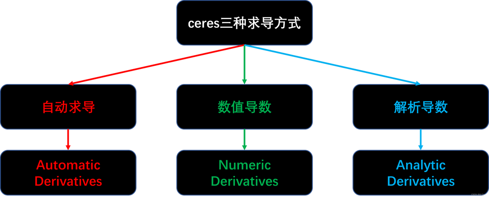

安装ceres-solve sudo apt-get update sudo apt-get install libceres-dev
1 | cmake_minimum_required(VERSION 3.31) |
- 构建优化问题Problem类
- 构建优化的CostFunction
- 最小二乘问题构建，在每次获取到数据后AddResidualBlock()
- solve最小二乘问题
Ceres的求解过程包括构建立最小二乘和求解最小二乘问题两部分 其中构建最小二乘问题的相关方法均包含在Ceres::Problem类中，涉及的成员函数主要包括：
AddxxxBlock
- Problem::AddResidualBlock(): 向 Problem 类传递残差模块的信息
- 参数包括：代价函数模块、损失函数模块 和 参数模块；
1
2
3
4
5
6
7
8
9
10
11ResidualBlockId Problem::AddResidualBlock(
CostFunction *cost_function, // 使用仿函数定义误差函数的计算方式
LossFunction *loss_function,
const vector<double *> parameter_blocks
)
ResidualBlockId Problem::AddResidualBlock(
CostFunction *cost_function,
LossFunction *loss_function,
double *x0, double *x1, ...
)
- 参数包括：代价函数模块、损失函数模块 和 参数模块；
- Problem::AddParameterBlock() 
{kind=link}
推荐使用AutoDiffCostFunction 1
2
3
4ceres::AutoDiffCostFunction< CostFunctor, // 仿函数（functor）类型
int residualDim, // 残差维数
int paramDim // 参数维数（可以有多个）
> (CostFunctor* functor);// CostFunctor: 仿函数指针
ceres::Solve
求解最小二乘问题，需要首先构建一个ceres::Problem对象，利用AddResidualBlock向其中添加残差模块。然后通过ceres::Solve函数是求解。函数原型如下： 1
2
3
4void Solve(const Solver::Options& options, // 求解的核心,控制消元顺序、分解方法、收敛精度
Problem* problem, // 构建的最小二乘问题
Solver::Summary* summary // 存储求解过程中的相关信息，不影响求解器性能
)
Solver::Options含有的参数种类繁多，是使用过程中需要着重设置的部分。这里列出一些常用参数：
- minimizer_type：迭代求解方法，可选LINEAR_SEARCH或TRUST_REGION(默认)。由于大多数情况选择LM或DOGLEG方法，因此该选项默认；
- trust_region_strategy_type：信赖域策略，可选LEVENBERG_MARQUARDT(默认)或DOGLEG，没有高斯牛顿选项；
- linear_solver_type：信赖域方法中，求解线性方程组所使用的求解器类型，默认为DENSE_QR；
- linear_solver_ordering：线性方程求解器的消元顺序，默认为NULL(即由Ceres自行决定)；在以BA为代表对消元顺序有特殊要求的应用中，可以通过成员函数reset设定消元顺序；
- min_linear_solver_iteration/max_linear_solver_iteration：意义如名，默认为0/500，一般不需要更改；
- max_num_iterations：求解器的最大迭代次数；
- max_solver_time_in_seconds：求解器的最大运行秒数；
- num_threads：Ceres求解时使用的线程数；
- minimizer_progress_to_stdout：是否向终端输出优化过程信息；
对最终求解性能影响最大的就是linear_solver_type和线程数num_threads，如果发现最后的求解精度或求解效率不能满足要求，应首先尝试更换这两个参数。ceres solver定义了7种线性求解器：
- DENSE_QR：默认，对于有100多个优化变量或不到1000个残差项的小优化问题，如果Jacobian是相对稠密的，那么使用QR分解；
- DENSE_NORMAL_CHOLESKY & SPARSE_NORMAL_CHOLESKY：Cholesky分解，用于具有稀疏性的大规模非线性最小二乘问题求解； 对于BA问题，可以使用SPARSE_NORMAL_CHOLESKY来求解；
- DENSE_SCHUR & SPARSE_SCHUR：SCHUR分解，用于BA问题求解；
- CGNR：使用共轭梯度法求解稀疏方程；
- ITERATIVE_SCHUR：使用共轭梯度SCHUR求解BA问题
例子： 1
2
3
4
5
6
7
8
9
10
11
12
13
14
15
16
17
18
19
20
21
22
23
24
25
26
27
28
29
30
31
32
33
34
35
36
37
38
39
40
41
42
//残差函数
// Ceres 要求代价函数定义为仿函数（重载 operator()），并且写成模板以支持自动微分。
// Ceres 会自动把残差平方作为 cost，所以目标就是最小化
struct CostFunctor {
template <typename T>
bool operator()(const T* const x, T* residual) const {
residual[0] = 10.0 - x[0];
return true;
}
};
int main(int argc, char** argv) {
// Abseil 的日志初始化库 启动日志系统 Ceres 默认用 glog/absl 打印日志
absl::InitializeLog();
double x = 0.5;
const double initial_x = x;
// 构建问题
ceres::Problem problem;
// 优化问题容器， AutoDiff 自动微分
ceres::CostFunction* cost_function =
new ceres::AutoDiffCostFunction<CostFunctor, 1, 1>(new CostFunctor);
// 1 表示残差维度只有一个残差 1 表示参数维度变量x是标量
problem.AddResidualBlock(cost_function, nullptr, &x);
// 把这个残差函数加到问题里，并且指定优化变量是 &x
// 第二个参数（nullptr）表示不使用鲁棒核函数
// 优化器选项
ceres::Solver::Options options;
options.minimizer_progress_to_stdout = true; // 在标准输出打印优化过程（
ceres::Solver::Summary summary;
ceres::Solve(options, &problem, &summary);
std::cout << summary.BriefReport() << "\n";
std::cout << "x : " << initial_x << " -> " << x << "\n";
return 0;
}
{kind=link}
- 总共 3 次迭代（包含初始状态）
- 初始 cost = 45.125
- 最终 cost = 5e-16，几乎完美收敛
- x 从初值 0.5 优化到 10，正好是理论最优解
Ceres Solver 取决于能够在任意参数值下评估目标函数中每个项的值和导数。正确有效地做到这一点对于获得良好的结果至关重要。 1
2
3
4
5ceres::CostFunction* cost_function =
new ceres::NumericDiffCostFunction<NumericDiffCostFunctor,
ceres::CENTRAL, 1, 1>
(new NumericDiffCostFunctor());
// 额外的模板参数指示用于计算数值导数的有限差分方案的类型
{kind=link}
1 | // |
SLAM 1
2
3
4
5
6
7
8
9
10
11
12
13
14
15
16
17
18
19
20
21
22
23
24
25
26
27
28
29
30
31
32
33
34
35
36
37
38
39
40
41
42
43
44
45
46
47
48
49
50
51
52
53
54
55
56
57
58
59
60
61
62
63
64
65
using namespace std;
struct LinearFunction
{
double _x, _y;
LinearFunction(double x, double y): _x(x), _y(y){}
template<typename T>
bool operator()(const T* const abc, T * residual) const { // 常量成员函数,不修改类的成员变量
// y - exp(ax^2 + bx + c)
residual[0] = T(_y) - ceres::exp(abc[0] * T(_x) * T(_x) + abc[1] * T(_x) + abc[2]);
return true;
}
};
int main(int argc, char** argv){
int N = 100;
double ar = 1.0, br = 2.0, cr = 1.5;
double w_sigma = 1.0; // 噪声Sigma值
double inv_sigma = 1.0 / w_sigma;
cv::RNG rng;
vector<double> x_data, y_data;
for( int i = 0; i < N; i++){
double xx = i / 100.0;
x_data.push_back(xx);
y_data.push_back(exp(ar * xx * xx + br * xx + cr) + rng.gaussian(w_sigma * w_sigma));
}
double ae = 1.0, be = 1.0, ce = 1.0;
double abc[3] = {ae, be, ce};
ceres::Problem problem;
for( int i = 0; i < N ; i ++){
problem.AddResidualBlock(
new ceres::AutoDiffCostFunction<LinearFunction, 1, 3>(new LinearFunction(x_data[i], y_data[i])),
nullptr,
abc
);
}
ceres::Solver::Options options;
options.linear_solver_type = ceres::DENSE_NORMAL_CHOLESKY;
options.minimizer_progress_to_stdout = true;
ceres::Solver::Summary summmary;
ceres::Solve(options, &problem, &summmary);
cout << summmary.BriefReport() << endl;
for(int i = 0; i < 3; i++){
cout << abc[i] << endl;
}
return 0;
}
解得的结果如下：
{kind=link}
1 | cmake_minimum_required(VERSION 3.28) |